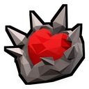

Handle With Care
Handle With Care is step 7 of Brann's Apprentice, given by  Brann.
Brann.
Objective
Craft the Kamikaze Necklace.
There's a necklace that blows up when your board tops out. I've never dared make one. You might.Brann
Requirements
- Turn in Masterwork first.
- It can be worked on before level 30, and is turned in at it.
Rewards
 Adamantite Sword
Adamantite Sword2,375 experience.
Walkthrough
- Get

Kamikaze Idol ×1: in a tier 3 Endless chest or a tier 4 Endless chests. - Get
 Magic Chain ×1: dropped by Cult Leader (1/48 a roll), Sandstone Golem (1/63 a roll) or The Unbound (1/63 a roll); in a tier 1 Endless chest or a tier 2 Endless chests; a reward from Spoils of the Road.
Magic Chain ×1: dropped by Cult Leader (1/48 a roll), Sandstone Golem (1/63 a roll) or The Unbound (1/63 a roll); in a tier 1 Endless chest or a tier 2 Endless chests; a reward from Spoils of the Road. - Craft
 Kamikaze Necklace: it needs level 30.
Kamikaze Necklace: it needs level 30. - Turn it in to Brann on the QUESTS screen.
Tips
- Magic Chains come from the Bandit King and from chests, and Vesper's Spoils gives one.
- The Kamikaze Idol comes from chests.
Changes
Not written yet
What changed in this quest, update by update.
| Brann's Apprentice | |
|---|---|
| Steps | Handiwork · Made to Measure · Smelter · Finer Work · Armory · Masterwork · Handle With Care · Past the Best |
| Next | Past the Best |